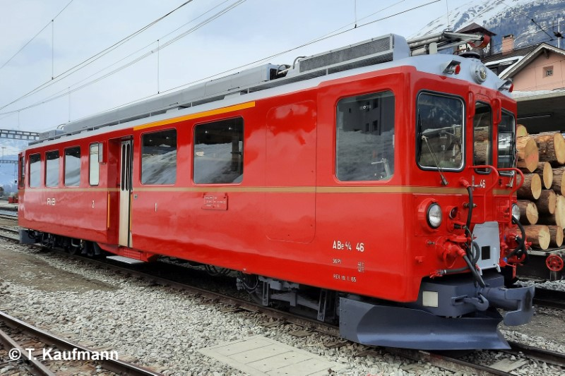
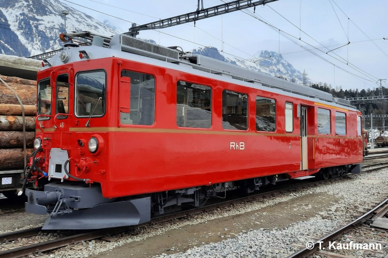

Allgemein
| Baujahr | 1965 |
| Einsatz | BB |
| Antriebstechnik | elektropneumatische Schützensteuerung |
| Leistung | 925 PS / 680 kW |
| Ergänzungsbremse | elektrische Bremswiderstände |
| Stationiert | Bahndienst Pontresina |
Technische Daten
| Geschwindigkeit | 65 km/h |
| Länge | 16.54 m |
| Gewicht (Tara / Burtto) | 41 t / 44 t |
| Bremsgewicht | 41 t |
| Magnetschienenbremse | 12 t (BG total = 53 t) |
| Feststellbremse | H 43 kN |
| Zusatz-Bremse | Bremszylinder - Verriegelung |
Fahrzeugausrüstung
| Nylatron-Pufferplatten | keine |
| Vielfachsteuerung | 61 polig |
| Zugbeeinflussung | ZSI E |
| Heizleitung | BB |
| Speiseluft-Leitung | ja |
| Bremssystem | Vakuum-Hauptleitung |
| Steuerleitung Spurpflug | 1000 V-Steckdose Schneeschleuder (inaktiv) |
| Türen | elektropneumatisch |
| Notfalleinrichtung | keine |
Fahrgastausstattung
| Plätze 1. Klasse | 12 |
| Plätze 2. Klasse | 24 |
| Klappsitze | keine |
| Niederflureinstiege | keine |
| Rollstuhlplätze | keine |
| WC-System | 1x offen |
| Velohaken | keine |
| Fahrgastinfosystem | keine |
| Zugzielanzeigen | keine |
| Fahrgastzählung | keine |